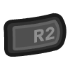

Fujitsu - FM Towns (Geartowns)¶
Background¶
Geartowns is an open source, cross-platform Fujitsu FM Towns emulator written in C++.
- FM Towns Model ½, 1F/2F, 10F/20F, FM Towns II CX, UX, UG and HG, and FM Towns Marty emulation with configurable CPU speed and RAM.
- 80386 dynamic recompiler (dynarec) on supported platforms.
- CD-ROM drive emulation with
cue/bin,isoandchdimages,m3udisc playlists and disc swapping. - Physical CD-ROM disc support through the frontend.
- Two floppy drives with
d77,d88,hdm,xdf,img, HxCmfmand rawbinimages, also insideziparchives,m3uplaylists, blank save disks and persistent disk changes. - Battery-backed CMOS shared by all content, or saved per game.
- Controllers:
- Original FM Towns gamepad (2 buttons)
- FM Towns Marty gamepad (2 buttons and Zoom)
- 6 button gamepad
- FM Towns mouse, also from an analog stick
- FM Towns keyboard support.
- Supported platforms (libretro): Windows, Linux, macOS, Android, iOS, tvOS and Raspberry Pi.
The Geartowns core has been authored by:
The Geartowns core is licensed under:
A summary of the licenses behind RetroArch and its cores can be found here.
BIOS¶
Geartowns requires the FM Towns system ROMs to work. Content does not load if a required ROM is missing, and the message lists the missing files.
Place the ROMs in a geartowns folder inside the frontend's system directory, in a subfolder of it such as geartowns/fmtowns/, or as the MAME set geartowns/fmtowns.zip. The system directory itself is searched the same way when the geartowns folder has no set for the machine.
Attention
FMT_SYS.ROM, FMT_DOS.ROM, FMT_FNT.ROM and FMT_DIC.ROM are required for Geartowns to function.
| Filename | Description | Size | md5sum |
|---|---|---|---|
| FMT_SYS.ROM | System ROM - Required | 256 KB | feaf8c5675151e00cfe3ad27673bff29 |
| FMT_DOS.ROM | OS ROM - Required | 512 KB | 0585b19930d4a7f4c71bcc8a33746588 |
| FMT_FNT.ROM | Font ROM - Required | 256 KB | eb44f2093f51eb7159f03e170b13af76 |
| FMT_DIC.ROM | Dictionary ROM - Required | 512 KB | 34847786d7de94b5d1133c956ab1d75d |
| FMT_F20.ROM | 20-dot Font ROM - Optional | 512 KB |
The checksums above identify the FM Towns Model ½ ROMs, the recommended set. File names are accepted in any case (fmt_sys.rom, fmt_dos.rom, fmt_fnt.rom, fmt_dic.rom and fmt_f20.rom).
The FM Towns II UX needs its own set, MAME's fmtownsux, in geartowns/fmtownsux/ or as geartowns/fmtownsux.zip. The 1F/2F, 10F/20F, CX and UG have no dump of their own and run on this set:
| Filename | Description | Size | md5sum |
|---|---|---|---|
| fmt_sys_a.rom | System ROM - Required | 256 KB | 90b5e01d42aaa93e8f4503a5e94e120b |
| fmt_dos_a.rom | OS ROM - Required | 512 KB | 03c8fac9a5f5f5f35fb5de5a5d0d018f |
| fmt_fnt.rom | Font ROM - Required | 256 KB | b91300e55b70227ce98b59c5f02fa8dd |
| fmt_dic.rom | Dictionary ROM - Required | 512 KB | 8fa4e553f28cfc0c30a0a1e589799942 |
| mytownsux.rom | Serial ROM - Optional | 32 bytes | 1a15f6c1b58ec7e5f850118610a787a7 |
The FM Towns II HG has no dump of its own. It runs on the FM Towns II HR set, MAME's fmtownshr, from the same generation, in geartowns/fmtownshr/ or as geartowns/fmtownshr.zip:
| Filename | Description | Size | md5sum |
|---|---|---|---|
| fmthr_sys.rom | System ROM - Required | 256 KB | ecc8c37735e591a878d750d5976d7f52 |
| fmt_dos.rom | OS ROM - Required | 512 KB | 0585b19930d4a7f4c71bcc8a33746588 |
| fmt_fnt.rom | Font ROM - Required | 256 KB | b91300e55b70227ce98b59c5f02fa8dd |
| fmt_dic.rom | Dictionary ROM - Required | 512 KB | 8fa4e553f28cfc0c30a0a1e589799942 |
| mytownshr.rom | Serial ROM - Optional | 32 bytes | 72a96dabf0f9e5fe0bb47b08fa456815 |
Without it, the HG runs on the FM Towns II Fresh TV set, MAME's fmtownsftv, in geartowns/fmtownsftv/ or as geartowns/fmtownsftv.zip:
| Filename | Description | Size | md5sum |
|---|---|---|---|
| fmt_sys.rom | System ROM - Required | 256 KB | 86fb6f7280689259f0ca839dd3dd6cde |
| fmt_dos.rom | OS ROM - Required | 512 KB | 0585b19930d4a7f4c71bcc8a33746588 |
| fmt_fnt.rom | Font ROM - Required | 256 KB | b91300e55b70227ce98b59c5f02fa8dd |
| fmt_dic.rom | Dictionary ROM - Required | 512 KB | 8fa4e553f28cfc0c30a0a1e589799942 |
| fmt_f20.rom | 20-dot Font ROM - Optional | 512 KB | ac0c7021e9bf48ca84b51ab651169a88 |
| mytownsftv.rom | Serial ROM - Optional | 32 bytes |
The FM Towns Marty needs its own set: MAME's fmtmarty (mrom.m36 and mrom.m37, 2 MB each) in geartowns/fmtmarty/ or as geartowns/fmtmarty.zip, or the Marty 2 files (fmt_sys.rom, fmt_dos.rom, fmt_fnt.rom, fmt_dic.rom and mar_ex0.rom-mar_ex3.rom, the 2 MB extension ROM).
Each set is recognized by its system ROM. Modified or unknown ROMs and sets dumped from other FM Towns models also load, but the core shows a warning. The Free FM Towns Project replacement ROMs are recognized. A blank ROM is used if FMT_F20.ROM is not found, and a serial ROM is generated if MYTOWNS.ROM, mytownsux.rom, mytownshr.rom or mytownsftv.rom is not found.
Extensions¶
Content that can be loaded by the Geartowns core have the following file extensions:
- .cue
- .chd
- .iso
- .zip
- .d77
- .d88
- .hdm
- .xdf
- .img
- .mfm
- .bin
- .m3u
Geartowns supports chd, iso and cue/bin CD-ROM images. Load the cue file, not a bin track. CUE audio tracks can use raw BIN, WAV (44.1 kHz, 16-bit stereo) or Ogg Vorbis files. Physical CD-ROM discs can be loaded with the frontend's Load Disc option where supported.
Floppy disk images can be d77, d88, hdm, xdf or img files, HxC mfm bitstream images such as MAME's copy-protected originals, or bin files holding a raw floppy image, also inside zip archives. Raw images may carry an E5 filler tail, and a 2HD image cut short at a track boundary loads with the missing tracks blank. Changes to an mfm disk are kept in a d77 working copy. A zip archive with several floppy images, such as MAME's multi-disk sets, lists each one as a separate disk control entry in file name order, like an m3u playlist, and starts from the first disk with an FM Towns boot sector. Zipped CD-ROM images are not supported; use chd or cue/bin. Multi-disk d77/d88 images expose each disk as a separate disk control entry.
Features¶
Frontend-level settings or features that the Geartowns core respects.
| Feature | Supported |
|---|---|
| Restart | ✔ |
| Screenshots | ✔ |
| Saves | ✔ (CMOS and floppy disks) |
| States | ✔ |
| Rewind | ✔ |
| Run-Ahead | ✔ |
| Netplay | ✔ (gamepads and mouse) |
| Core Options | ✔ |
| Memory Monitoring (achievements) | ✔ |
| RetroArch Cheats | ✔ |
| Native Cheats | ✕ |
| Controls | ✔ |
| Remapping | ✔ |
| Multi-Mouse | ✕ |
| Rumble | ✕ |
| Sensors | ✕ |
| Camera | ✕ |
| Location | ✕ |
| Subsystem | ✕ |
| Softpatching | ✕ |
| Disk Control | ✔ |
| Username | ✕ |
| Language | ✕ |
| Crop Overscan | ✕ |
| LEDs | ✕ |
Keyboard input is not synchronized in netplay. Netplay peers must start with the same floppy disk working copies. With the shared CMOS they must also start with the same CMOS file; set CMOS to Per Game for netplay.
Save states¶
States keep the machine and the identity of the inserted disks, but not the contents of the floppy disks. Loading a state or rewinding does not undo what a game wrote to a floppy disk. When a state was made with another disk in a drive, or with a disk in a drive that is now empty, the core inserts that disk from the disk control list and loads the state; if the disk is not in the list, the state does not load. States are about 3 MB with the default 2 MB of RAM and grow with the Main RAM option.
States saved by the Geartowns desktop application can't be loaded by the core.
Starting without content¶
The core can start without content. The BIOS waits for a boot disk; add a CD-ROM or floppy image with Disc Control > Append Disc and insert it.
Disk control¶
Disk controls manage both the CD-ROM drive and the floppy drives. Eject the current disk, select another disk index, then insert it again. A CD-ROM entry goes to the CD-ROM drive and a floppy entry goes to the floppy drive chosen with Disk Control Floppy Drive. The same floppy disk cannot be in both drives.
Each drive keeps its own disk. When the selected entry belongs to another drive, the ejected drive gets its disk back right away, so a CD-ROM game keeps its disc while a floppy disk is changed.
When content is opened again, the disk RetroArch remembers is used for CD-ROM entries. Floppy disk content always starts from its first disk.
Load an m3u playlist to add several CD-ROM or floppy images to the disk control list. Playlists can mix CD-ROM and floppy images; when they do, the first image of the other media type is also inserted at startup. Enable Floppy MultiDrive to also insert the floppy disk that follows the boot floppy into drive 2, wrapping to the start of the list.
Custom labels for the disk control list can be set with DISK_FILE|DISK_LABEL. A blank label (DISK_FILE|) shows only the disk index. A #SAVEDISK:DiskName line adds a formatted blank 2HD save disk; DiskName is optional and is stored as the D77 disk name, not as a volume label on the disk. Save disks are created in the frontend's save directory as [M3U_FILE_NAME].save[N].d77 and labelled Save Disk N, counting from 0.
Game.m3u
Floppy disks¶
Geartowns never writes to the original floppy images. When a game writes to a floppy disk, the changes are stored as a working copy in the frontend's save directory and loaded automatically the next time the same disk is inserted. Changes are written a few seconds after the game stops writing, when the disk is ejected or swapped, and when the content is closed.
Delete the working copy to return to the original disk image.
Some software asks for a blank user or save disk. Enable Save Disk to add a formatted blank 2HD disk named "Save Disk" to the disk control list, or add a #SAVEDISK: line to an m3u playlist. Save disks are created in the save directory, and games write to them directly.
CMOS¶
The FM Towns keeps its settings in 8 KB of battery-backed CMOS: the boot device, Towns OS settings and the OAK/2 kana-kanji user dictionary. By default the core keeps one CMOS for all content in the save directory, as on the real machine, so settings made by one program are seen by the others. The CMOS is saved a few seconds after it changes, on restart and when the content is closed. Set CMOS to Per Game to keep a separate CMOS in each content's .srm save file instead.
A new CMOS starts with the stock OAK/2 user dictionary that Towns OS boot disks install. Some games, such as Kyuukyoku Tiger, need it and stop at the Towns OS logo without it. On models with two floppy drives it also starts with Towns OS single-drive mode off, so floppy games such as Rance 2 find their second disk in drive B; a shared CMOS file from an older core version is updated once to match. Delete the CMOS file to start again with a new CMOS.
Save states include the CMOS. Loading a state also brings back the CMOS it was made with, and with the shared CMOS that is saved to the shared file.
Directories¶
The Geartowns core's library name is 'Geartowns'.
The Geartowns core saves/loads to/from these directories.
Frontend's System directory
| File | Description |
|---|---|
| geartowns/FMT_SYS.ROM | System ROM |
| geartowns/FMT_DOS.ROM | OS ROM |
| geartowns/FMT_FNT.ROM | Font ROM |
| geartowns/FMT_DIC.ROM | Dictionary ROM |
| geartowns/FMT_F20.ROM | 20-dot Font ROM |
Subfolders and MAME zips there are searched too, and the system directory itself when the geartowns folder has no set for the machine.
Frontend's Save directory
| File | Description |
|---|---|
<model>.geartowns.cmos |
Shared CMOS, one per model (model1_2, 1f_2f, 10f_20f, cx, ux, ug, hg, marty) |
| *.srm | Per game CMOS |
<image name>.<CRC32>.geartowns.d77 |
Floppy disk working copy |
<image name>.<CRC32>.<N>.geartowns.d77 |
Working copy of disk N when an earlier disk of the same image is identical |
<content name>.save.d77 |
Save disk |
<m3u name>.save<N>.d77 |
Playlist save disk |
Frontend's State directory
| File | Description |
|---|---|
| *.state# | State |
Geometry and timing¶
- The Geartowns core reports a dynamic refresh rate that follows the vertical sync rate of the emulated CRTC
- The Geartowns core's provided sample rate is 44100 Hz
- The Geartowns core's base size follows the active video mode, starting at 640x480
- The Geartowns core's max width is 1024
- The Geartowns core's max height is 768
- The Geartowns core's default aspect ratio is 4:3; the 'Aspect Ratio' core option can change it
Core options¶
The Geartowns core has the following options that can be tweaked from the core options menu. The default setting is bolded.
Settings marked (restart) take effect after reloading the content.
-
Aspect Ratio [geartowns_aspect_ratio] (1:1 PAR|4:3 DAR|16:9 DAR|16:10 DAR)
Select which aspect ratio will be presented by the core. 1:1 PAR produces square pixels at monitor resolution, also when Native Resolution outputs fewer pixels.
-
Native Resolution [geartowns_native_resolution] (Enabled|Disabled)
Output one pixel per game pixel, as shaders expect. When disabled, zoomed modes are output at monitor resolution.
-
Frameskip [geartowns_frameskip] (Disabled|Auto|Manual)
Skip frames to avoid audio crackling when the device is too slow. Auto skips when the frontend reports that the audio buffer is about to run out, Manual uses Frameskip Threshold (%).
-
Frameskip Threshold (%) [geartowns_frameskip_threshold] (33|15-60)
With Manual frameskip, skip frames while the audio buffer is below this percentage. Higher values reduce crackling but skip more frames. Shown when Frameskip is Manual.
-
FM Volume [geartowns_fm_volume] (100|0-200)
Volume of the FM synthesizer, as a percentage.
-
PCM Volume [geartowns_pcm_volume] (100|0-200)
Volume of the PCM sound source, as a percentage.
-
CD-DA Volume [geartowns_cdda_volume] (100|0-200)
Volume of the CD-ROM audio tracks, as a percentage.
-
Buzzer Volume [geartowns_buzzer_volume] (100|0-200)
Volume of the buzzer that plays system beeps, as a percentage.
-
Allow Opposing Directions [geartowns_up_down_allowed] (Disabled|Enabled)
Enable this option to press, quickly alternate, or hold both left and right, or up and down, at the same time.
This may cause movement-based glitches in some software.
It is best to keep this option disabled.
-
Mouse Sensitivity [geartowns_mouse_sensitivity] (5|1-15)
Adjust FM Towns mouse sensitivity. Higher values move the cursor faster.
-
Analog Stick Mouse [geartowns_analog_mouse] (Disabled|Left stick|Right stick)
Move the FM Towns mouse with an analog stick of the first controller. L2 and R2 are the mouse buttons. Needs a mouse port, port 2 by default.
-
Analog Mouse Speed [geartowns_analog_mouse_speed] (5|1-10)
Adjust how fast the analog stick moves the FM Towns mouse. Shown when Analog Stick Mouse is enabled.
-
Preload CD-ROM (restart) [geartowns_cdrom_preload] (Disabled|Enabled)
Preload all CD-ROM tracks into RAM. This increases memory usage but may improve performance.
-
CD-ROM Read Speed [geartowns_cdrom_speed] (1x (Original)|2x|4x|8x)
Speed up how fast the drive reads sectors. Faster speeds reduce loading times, but some software may not expect a faster drive.
-
Disk Control Floppy Drive [geartowns_floppy_drive] (Floppy 1|Floppy 2)
Select the floppy drive that the frontend's disk control ejects and inserts floppy disks into.
-
Floppy MultiDrive (restart) [geartowns_floppy_multidrive] (Disabled|Enabled)
Also insert the floppy that follows the boot floppy into drive 2, for software that reads from both drives.
-
Save Disk (restart) [geartowns_save_disk] (Disabled|Enabled)
Add a blank 2HD floppy disk to the disk control list for software that asks for a user or save disk. It is stored in the save directory.
-
Model (restart) [geartowns_model] (Auto|FM Towns (Model ½) (80386DX 16 MHz)|FM Towns 1F/2F (80386DX 16 MHz)|FM Towns 10F/20F (80386DX 16 MHz)|FM Towns II CX (80386DX 16 MHz)|FM Towns II UX (80386SX 16 MHz)|FM Towns II UG (80386SX 20 MHz)|FM Towns II HG (80386DX 20 MHz)|FM Towns Marty (80386SX 16 MHz))
The FM Towns model to emulate. Auto picks the machine, CPU speed and RAM the game database names for the game, the FM Towns II HG for 1.44 MB floppy disks, and the FM Towns (Model ½) for other content. It is recommended to leave this option on Auto. RetroArch's 'Save Game Options' keeps a choice for one game.
-
CPU Speed (restart) [geartowns_cpu_clock] (Auto|16 MHz|20 MHz|25 MHz|33 MHz|40 MHz|50 MHz|66 MHz|100 MHz)
Auto runs the CPU at the model's original clock, or at the speed the game database names when Model is on Auto. Devices keep their real timing at any speed. Some software may not expect a faster CPU.
-
Main RAM (restart) [geartowns_main_ram] (Auto|1 MB|2 MB|4 MB|6 MB|8 MB|10 MB|12 MB|16 MB|20 MB|24 MB|26 MB)
Auto uses the model's original RAM, or the RAM the game database names when Model is on Auto. A size the model doesn't offer uses its next size up, or its largest. Some software needs more than 2 MB. Save states grow with it.
-
Clock Start (restart) [geartowns_rtc] (Host time|Fixed date)
Start the FM Towns clock from the host time or from a fixed date (January 1, 1990). A fixed date makes netplay and replays independent of each computer's clock.
-
CMOS (restart) [geartowns_cmos] (Shared|Per Game)
Where the battery-backed CMOS with the machine settings and the OAK/2 user dictionary is kept. 'Shared' keeps one CMOS for all content in the save directory, like the real machine. 'Per Game' keeps a separate CMOS in each content's save file, a better choice for netplay.
-
CPU Dynarec [geartowns_dynarec] (Enabled|Disabled)
Use dynamic recompilation. Most games will run faster but some games may run slower.
The core falls back to the interpreter if the frontend can't run generated code. This option is not available on iOS and tvOS.
Joypad¶
Port 1 defaults to Original gamepad and port 2 to Mouse. Both ports also accept Marty gamepad, 6 button gamepad and Keyboard, port 1 accepts Mouse and port 2 Original gamepad. For a second gamepad, set port 2 to a gamepad type.
| RetroPad Inputs | Original gamepad | Marty gamepad | 6 button gamepad |
|---|---|---|---|
| D-Pad Up | D-Pad Up | D-Pad Up | |
| D-Pad Down | D-Pad Down | D-Pad Down | |
| D-Pad Left | D-Pad Left | D-Pad Left | |
| D-Pad Right | D-Pad Right | D-Pad Right | |
| Select | Select | Select | |
| Run | Run | Run | |
| A | A | C | |
| B | B | B | |
| A | |||
| Y | |||
| X | |||
| Zoom | Z |
A port set to Keyboard has no FM Towns gamepad. Use RetroArch's keyboard mapping in Quick Menu > Controls to assign FM Towns keys to the RetroPad buttons of that port.
Mouse¶
The mouse is in port 2 by default. Set port 1 to Mouse to move it there; port 2 left at Mouse then works as an Original gamepad, since only one mouse is supported. The FM Towns mouse follows the mouse of RetroArch's first user, whichever port it is plugged into. Adjust movement with Mouse Sensitivity.
| RetroMouse Inputs | FM Towns Mouse |
|---|---|
| Mouse movement | Movement |
| Left button | Left button |
| Right button | Right button |
Without a mouse, enable Analog Stick Mouse to move the FM Towns mouse with an analog stick of the first controller.
| RetroPad Inputs | FM Towns Mouse |
|---|---|
| Left or right analog stick | Movement |
| Left button | |
 |
Right button |
Keyboard¶
The host keyboard is mapped to the FM Towns keyboard by key position. Letters, numbers, cursor keys, the numeric keypad, Shift, Left Ctrl, Alt, Tab, Space, Enter, Backspace, Insert, Delete and Home map to the FM Towns keys with the same names.
Attention
Outside Game Focus mode, RetroArch does not pass keys bound to hotkeys or to RetroPad buttons to the core. With the default bindings this includes F1-F9, F11, Enter, Space, Escape, the cursor keys and many letters. Enable Game Focus (Scroll Lock by default) before typing, or set Settings > Input > Auto Game Focus to Detect. On keyboards without Scroll Lock, bind Game Focus to another key in Settings > Input > Hotkeys.
Keys that map to a different FM Towns key:
| Host key | FM Towns key |
|---|---|
| F1 - F15 | PF1 - PF15 |
| Escape / Pause | BREAK |
| ` (backquote) | ESC |
| = (equals) | ^ |
| [ (left bracket) | @ |
| ] (right bracket) | [ |
| \ (backslash) | ¥ |
| # (UK keyboards) | ] |
| ' (quote) | : |
| Caps Lock | CAPS |
| Page Up | PREVIOUS |
| Page Down | NEXT |
| Print Screen | COPY |
| Right Alt | Kana/Kanji |
| Right Ctrl | KATAKANA |
| Left Super | NO CONVERT |
| Right Super | CONVERT |
| Menu | HIRAGANA |
The FM Towns HALF/FULL, PF16-PF20, keypad 000 and dictionary keys have no host key in the libretro core. On keyboards without a # key, map # to a button with RetroArch's keyboard mapping to reach the FM Towns ] key.